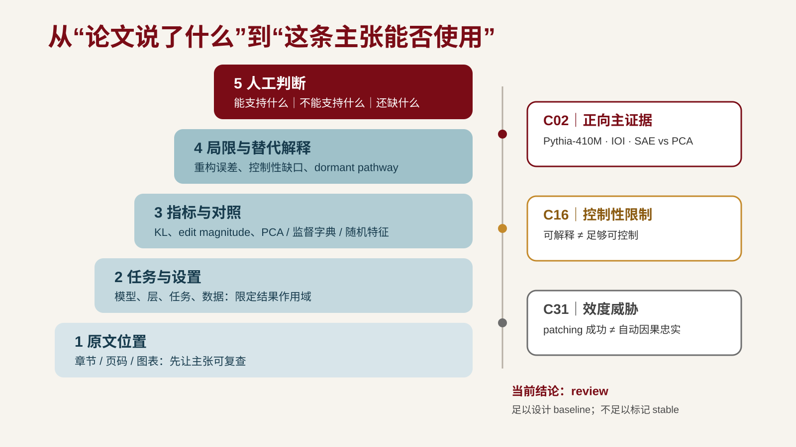

第四讲｜AI 辅助精读与主张核验¶
导读¶
第 3 课把检索过程变成可复盘的方法，为每条材料分别记录预期证据角色、核验状态和筛选决定，并完成“书目身份 + 一条拟用主张”的入口核验。但一条入口核验通过的论文，如果你没有继续核对多条主张、位置、指标、对照和限定条件，仍然可能成为错读的起点。
一个常见失败是：研究者让 AI 生成一篇论文的摘要，AI 输出结构完整、措辞流畅，研究者据此写下"该论文证明 X 可以降低 Y"，并把这条主张搬进自己的证据地图。问题是：
- 原文研究的任务和当前项目一样吗？
- 原文的指标和对照是什么？
- 原文说的是"降低"还是"在特定条件下降低"？
- AI 给出的页码、图表、公式位置是否真的指向它复述的内容？
- 这条主张是作者写的，还是 AI 从"看起来合理"补出来的？
如果这些没有被处理，"已读"只是一次未核验的转述。本课的目标是把精读过程变成"原文位置—主张—人工判断"的追踪关系：AI 可以建立阅读地图、提出候选解释、暴露遗漏，但每条关键主张必须回到原文位置，并由研究者作出判断。
本课学习边界：当堂不追求“读完一篇论文”，只围绕一条关键主张完成一张全字段阅读卡。身份、主张、原文位置、限定、个人判断和偏差审计必须可检查；其他主张与论文在课后沿用同一流程补全。
学习目标¶
完成本讲后，你应该能够：
- 用五步流程（AI 导航→原文核验→AI 质疑→偏差审计→人工定稿）完成一篇论文的结构化精读；
- 区分 AI 主张与原文主张，对每条关键主张回到原文检查任务、设置、指标、对照和限定条件；
- 识别 AI 错读、过度概括和伪造引用；至少记录一处 AI 错误或遗漏，未发现时记录已检查风险与核验依据；
- 为关键论文建立阅读卡，记录页码、图表或章节位置，区分作者主张、原文证据、个人判断和 AI 建议；
- 说明 AI 输出为何只能作为阅读线索，不能单独成为主张或证据。
一、AI 辅助精读在研究链路中的位置¶
八阶段研究链路中，本课承接阶段四"外部输入摄取"，并向阶段五"证据整理"输出经过精读的材料。第 3 课解决“材料从哪来、哪一条拟用主张可安全进入候选表”；本课解决“整篇论文有哪些关键主张、各自说到什么程度”。
与第 3 课的连接：第 3 课候选文献表里的
verified表示书目信息和至少一条拟用主张与原文一致，不表示整篇论文的贡献、证据结构和局限已经完成精读。本课把这类论文进一步拆成多条可追溯的“主张—位置—证据—判断”。与第 5 课的连接：第 5 课把多篇论文的阅读卡重组为证据地图，按研究问题而非按论文排列。阅读卡里"原文位置—主张—人工判断"的追踪关系，是证据地图能区分支持、反驳、冲突和空白的基础。
AI 辅助精读不是"让 AI 读完告诉我结论"。它是一个有节奏的流程：AI 先建立阅读地图，研究者回到原文核验，AI 再根据已核验内容提出质疑，研究者审计偏差并人工定稿。每一步都有明确的产物和核验点。
二、AI 辅助精读五步流程¶
本课程的核心阅读采用以下流程（见 reading-list.md 第二节）：
1. AI 导航¶
让 AI 给出一篇论文的中心问题、论证结构、关键术语、预期证据和待追问问题。全部标记为"未核验"。
这一步的目的是快速建立阅读地图，决定哪些段落、图表或实验值得重点读。AI 导航的输出只是路线提示，不是结论。常见的 AI 导航产物：
- 中心问题（一句话）；
- 论证结构（问题→方法→设置→结果→局限）；
- 关键术语表；
- 预期证据位置（图表、公式、实验编号）；
- 待追问问题（措辞强度、限定条件、对照设计）。
注意：AI 给出的"预期证据位置"可能是错的。它可能说"见图 3"，但图 3 说的不是这件事。这正是下一步要核验的。
2. 原文核验¶
人工阅读指定章节或段落，至少记录两个可复查的章节、页码、图表、公式或实验位置。这一步不可跳过。
核验时至少检查：
- AI 给出的中心问题与原文摘要、引言是否一致？
- AI 指向的图表、公式或实验编号是否真的对应它复述的内容？
- 原文的措辞是"降低""改善"还是"消除""解决"？
- 结果来自什么指标、什么对照、什么样本？
- 原文是否限定到特定数据集、模型、任务或条件？
记录方式：每条核验后的主张，标注原文位置（如"§3.2, p.5, Fig.2"）。没有原文位置的主张，不能进入阅读卡的"作者主张"栏。
3. AI 质疑¶
让 AI 根据已核验内容提出反例、遗漏和适用边界，与个人笔记比较。这一步的目的是暴露你自己的盲点：你可能因为觉得方法"看起来合理"而跳过了对照设计或限定条件。
AI 质疑的典型问题：
- 这个结果在什么条件下会被推翻？
- 对照是否公平？baseline 是否有被低估的可能？
- 样本规模是否足以支撑原文的结论强度？
- 原文的限定条件是否被你的笔记遗漏？
- 是否存在原文未讨论的替代解释？
AI 质疑的输出仍然只是候选问题，不是判断。你需要回到原文检查每个问题，而不是直接采纳 AI 的质疑。
4. 偏差审计¶
至少记录一处 AI 的错误、过度概括或遗漏；如果未发现明显错误，记录已检查的风险点及核验依据，不虚构错误。
偏差类型见 §三。偏差审计的最小记录：
| AI 输出 | 偏差类型 | 原文实际内容 | 核验位置 | 处理 |
|---|---|---|---|---|
| "原文证明 X 消除 Y" | 过度概括 | 原文为"在数据集 D 上降低 Y" | §4.1, p.7 | 改写为限定主张 |
| "见图 3" | 位置错指 | 图 3 讨论的是另一指标 | p.9, Fig.3 | 重新定位 |
| "作者提出 Z 方法" | 张冠李戴 | Z 方法来自参考文献 [12] | §2, p.3, ref [12] | 标注真实来源 |
偏差审计记录是本课课堂产出之一。它不是"AI 出了错"的笑话集，而是后续评价 AI 辅助阅读工作流的重要证据。
5. 人工定稿¶
由学生写出最终阅读卡，区分作者主张、原文证据、个人判断和 AI 建议。阅读卡字段见 §五。
人工定稿的判断责任在学生。AI 可以建议措辞、补充候选、提出质疑，但阅读卡里的"作者主张"必须能回到原文位置，"个人判断"必须写明理由和适用边界。
三、主张核验：区分 AI 主张与原文主张¶
1. 为什么要区分¶
生成式模型在复述论文时，会把原文内容、模型推断和"看起来合理"的补充混在一起输出。如果不区分，研究者会把 AI 的推断误当成作者的主张，再把这种误认带进证据地图。
一条 AI 复述的可能来源：
- 原文确实写了（作者主张）；
- 原文写了相关内容，AI 推断出更具体的结论（模型推断）；
- 原文没写，AI 根据常识或相关文献补充（模型新增）；
- AI 把不同论文的内容拼装（张冠李戴）；
- AI 改写了措辞强度（过度概括）。
只有第一种能进入阅读卡的"作者主张"栏。后四种必须标为模型推断、待核验或偏差。
2. 回到原文检查什么¶
对每条关键主张，至少回到原文检查以下五项：
| 维度 | 检查问题 | 举例 |
|---|---|---|
| 任务 | 原文研究的任务和当前项目一样吗？ | 原文是医学问答，当前是代码生成——不能直接迁移 |
| 设置 | 输入、规模、条件是什么？ | 原文用 100 条样本，当前项目需要 10k 规模 |
| 指标 | 用什么度量？定义是否一致？ | 原文用准确率，当前用 F1——不能直接比较 |
| 对照 | baseline 是什么？是否公平？ | 原文 baseline 未调参——"降低"可能只是对照过弱 |
| 限定 | 原文限定的范围是什么？ | 原文只验证英语，不能外推到多语言 |
这五项对应 Keshav 三遍阅读法中第二遍的"深度阅读"检查点（见延伸阅读）。它们不是"读完整篇"的清单，而是"这条主张能不能用"的检查。
3. 错读、过度概括与伪造引用¶
本课要求识别的三类常见偏差：
- AI 错读：AI 复述的任务、设置、指标或对照与原文不一致。例如原文研究的是"在固定预算下的检索质量"，AI 复述为"检索质量"。
- 过度概括：措辞强度被改写。原文"在条件 C 下降低 Y"，AI 输出"消除 Y"或"解决 Y"。
- 伪造引用：AI 给出的题名、作者、年份、页码、DOI 与正式来源无法对应，或把不同论文的内容拼装成一条。
与第 3 课的连接：第 3 课入口核验处理“文献身份是否一致，以及一条拟用主张能否安全使用”；本课内容核验处理“多条关键主张、位置、证据结构和局限是否被准确理解”。
四、阅读卡字段¶
阅读卡是本课的课堂产出，也是第 5 课证据地图的输入。最小字段：
论文：题名 / 作者 / 年份 / DOI
来源核验状态（承接第 3 课）：pending / verified / verified-with-caveat / rejected
证据角色（承接第 3 课）：主证据 / 补充 / 对比 / 探索线索
中心问题（一句话，核验后）
作者主张（每条标注原文位置）：
- 主张 1 → §x.x, p.x, Fig.x
- 主张 2 → §x.x, p.x, Table x
原文证据（指标、对照、样本、限定）：
- 指标：
- 对照：
- 样本：
- 限定：
局限与边界（作者自述 + 个人判断）：
- 作者自述：
- 个人判断：
个人判断（适用性、待验证、与当前项目的关系）：
AI 建议（待核验，不混入作者主张）：
AI 偏差审计（错误/遗漏，或已检查风险与依据，见 §二·4）：
内容核验状态：pending / verified / verified-with-caveat / rejected
字段说明：
- 作者主张：每条必须标注原文位置（章节、页码、图表、公式或实验编号）。没有位置的主张不能进入此栏。
- 原文证据：不是 AI 复述的指标，而是你在原文找到的、可复查的数字、表格或实验设置。
- 局限与边界：区分"作者自述的局限"和"你判断的边界"。作者可能只说"样本小"，你判断"只验证了英语，不能外推到中文"。
- 个人判断：写明这条主张在当前项目里能支撑什么、不能支撑什么、是否需要补充实验或材料。
- AI 偏差审计：至少记录一处 AI 错读、过度概括、位置错指或伪造引用；未发现明显错误时，记录已检查的风险点及核验依据。
- 核验状态：
pending可留在候选表线索区，但不能进证据地图主格；verified可进主格；verified-with-caveat进主格时必须保留范围、方法、版本或措辞限定，不得单独支撑stable；rejected仅留审计记录。
本课所说的“完整阅读卡”不是把整篇论文读完，而是围绕至少 1 条关键主张，将上述所有字段填入可复查内容；不适用的字段必须写明“不适用”及理由，不得留空。
阅读卡统一保存在个人项目 reading-cards.md。第 5 课再把其中的主张—位置对重组进证据地图；第 6 课问题门统一检查至少 3 张与个人项目直接相关的完整精读卡。
五、常见错误¶
- AI 摘要当阅读卡：把 AI 输出的论文摘要直接复制进阅读卡，不做原文核验。AI 摘要只是导航线索，不能作为作者主张。
- 主张无位置：写"作者认为 X"，但不标原文位置。无法复查的主张不能进入证据地图。
- 措辞强度被改写：原文"降低"被写成"消除"，原文"在条件 C 下"被省略。每条主张检查任务、设置、指标、对照、限定五项。
- AI 质疑当结论：AI 提出"这个结果可能不成立"，研究者直接写进阅读卡。AI 质疑只是候选问题，需要回到原文检查。
- 偏差审计缺位：只记录 AI 做对了什么，不记录错在哪里。偏差审计是工作流评价材料，不是表扬稿。
- 阅读卡不区分判断来源：作者主张、原文证据、个人判断、AI 建议混在一栏。阅读卡必须四类分栏。
- 外推未限定：原文只验证了特定数据集或任务，阅读卡直接写"该方法有效"。必须记录原文限定条件和个人判断的边界。
六、真实演示：Keshav 2007 原文到完整阅读卡¶
演示对象是 S. Keshav 的 How to Read a Paper，DOI 10.1145/1273445.1273458。原文为滑铁卢大学公开 PDF，共 2 页。论文对象和书目信息是真实来源；下文标注为“课堂构造 AI 输出”的句子是为训练偏差审计而写，不是实际模型运行结果。
第一步：AI 导航¶
让 AI 给出中心问题、论证结构、关键术语、预期证据位置和待追问问题。课堂构造 AI 输出：“这篇论文通过对照实验证明，三遍阅读法可将阅读时间降低 50%；第一遍固定需要 5 分钟。”全部标记“未核验”。
第二步：原文核验¶
人工阅读第 1 页摘要和 §2，再检查第 2 页 §4。核验发现：
- 摘要与 §2 表明文章提出三遍阅读法，并解释各遍阅读的目标；
- 文章没有报告支撑“降低 50%”的对照实验、指标或样本；
- §2.1 写的是第一遍通常用时约 5–10 分钟，不是固定 5 分钟；
- §4 是作者基于 15 年使用经验的叙述，不应改写成已报告的受控实验效果。
记录原文位置：p.83 摘要与 §2/§2.1；p.84 §4。
第三步：AI 质疑¶
让 AI 根据已核验内容提出反例和遗漏。合格的待查问题包括：这是规范性阅读建议还是经验效果证据？对不同学科、论文类型或阅读目标是否需要调整？这些问题仍要回原文或补充证据核验。
第四步：偏差审计¶
记录至少一处偏差：
| AI 输出 | 偏差类型 | 原文实际内容 | 核验位置 | 处理 |
|---|---|---|---|---|
| “对照实验证明阅读时间降低 50%” | 模型新增/伪造效果 | 原文提出三遍阅读法，未报告该对照实验 | p.83 摘要与 §2；p.84 §4 | 删除量化效果主张 |
| “第一遍固定 5 分钟” | 措辞强化 | 原文写约 5–10 分钟 | p.83 §2.1 | 改为带范围的转述 |
第五步：人工定稿¶
写出完整阅读卡：作者主张与位置、原文依据、不适用的指标/对照/样本及理由、限定、作者自述和个人边界、个人判断、待核验 AI 建议、偏差审计和内容核验状态。示例的完整可编辑版见 reading-card-demo.md。
平行演示：同一问题的三张 MI 阅读卡¶
Keshav 示例用于校准“如何把 AI 摘要拉回原文”；接下来把同一动作放进一个真实研究争议。课程公开教学问题是：在 Pythia-410M 的 IOI 任务上，SAE 特征能否比 PCA 更稀疏地定位并干预模型行为；这种 patching 成功还需要哪些证据，才能支持“因果忠实”的解释？

图注：课程自绘结构图。C02、C16、C31 分别承担正向主证据、控制性限制和 patching 效度威胁。图中不含实证数值；来源与许可见 assets/README.md（未公开；请查对应公开来源）。
三张完整卡见 mi-reading-card-demo.md：
- C02 的原文位置是 pp.5-6 §4/Fig.3 与 p.9 §6.2；它允许写“该设置下 SAE patching 比 PCA 更稀疏有效”，但不能直接写“特征因果忠实”。
- C16 的原文位置是 pp.1-2、p.11 与 pp.13-14；它表明可解释性不自动推出控制性，但模型和协议不同，不能冒充 C02 的直接反驳。
- C31 的原文位置是 pp.1-5；它说明 patching 可能激活 dormant pathway，同时也保留成功案例，因此允许主张是“需要额外证据”，不是“所有 patching 都无效”。
这三张卡都标为 verified-with-caveat。它们能进入第 5 课证据地图主格，但 caveat 必须随条目移动；当前综合判断仍是 review，不能标为 stable。
七、课堂练习¶
练习 1：AI 导航¶
选一篇你候选文献表里的 verified 论文。让 AI 给出中心问题、论证结构、关键术语、预期证据位置和待追问问题。全部标记"未核验"。
练习 2：原文核验¶
人工阅读 AI 导航指向的段落或图表。至少记录两个可复查的原文位置（章节、页码、图表或公式）。检查 AI 指向是否真的对应它复述的内容。
练习 3：偏差审计¶
对 AI 导航输出逐条核验，填写最小偏差审计表。至少记录一处 AI 错读、位置错指、过度概括或遗漏；未发现明显错误时，记录已检查的风险点及核验依据。
练习 4：主张核验¶
从论文里选一条关键主张，回到原文检查任务、设置、指标、对照、限定五项。写明这条主张在你的项目里能支撑什么、不能支撑什么。
练习 5：阅读卡第一版¶
在项目 reading-cards.md 写入至少一张完整阅读卡。至少包含：作者主张（带位置）、原文证据、局限与边界、个人判断、AI 偏差审计、核验状态。课堂只要求跑通一篇论文的完整流程；第 5 课继续使用这些阅读卡，第 6 课问题门前累计至少 3 张与个人项目直接相关的完整精读卡。
本课不正式提交。当堂最低产出是一张围绕一条主张的完整阅读卡、一条偏差审计和一条 AI 使用记录；课后才补到累计 3 张；第 6 课按问题门检查当时的完整项目版本。
八、术语表¶
| 术语 | 本课程中的含义 |
|---|---|
| AI 导航 | 让 AI 给出中心问题、论证结构、关键术语和预期证据位置，全部标记"未核验" |
| 原文核验 | 人工阅读指定段落，记录可复查的章节、页码、图表或公式位置 |
| AI 质疑 | 让 AI 根据已核验内容提出反例、遗漏和适用边界，作为候选问题 |
| 偏差审计 | 记录至少一处 AI 错读、过度概括、位置错指或伪造引用，或记录检查过的风险点 |
| 人工定稿 | 由学生写出阅读卡，区分作者主张、原文证据、个人判断和 AI 建议 |
| 作者主张 | 原文确实写了的内容，必须能回到原文位置 |
| 模型推断 | AI 根据原文相关内容推断出的更具体结论，不是作者主张 |
| 过度概括 | 措辞强度被改写，如"降低"被写成"消除" |
| 伪造引用 | AI 给出的题名、作者、年份、页码或 DOI 与正式来源无法对应 |
| 阅读卡 | 记录一篇论文主张、证据、局限、个人判断和 AI 偏差的结构化卡片 |
| 核验状态 | pending / verified / verified-with-caveat / rejected |
| 原文位置 | 章节、页码、图表、公式或实验编号，用于复查主张来源 |
九、延伸阅读与课程材料¶
课程内材料：
正式书目（见 reading-list.md 第 4 课）：
- Keshav, S. "How to Read a Paper." ACM SIGCOMM Computer Communication Review 37(3), 83–84 (2007). DOI: 10.1145/1273445.1273458。作者课程 PDF。用途：以三遍阅读法控制阅读深度，建立实验论文的检查问题。
- Booth, W. C. et al. The Craft of Research, 5th ed. University of Chicago Press, 2024. 选读 Chapter 4 "Engaging Sources"，重点为 reading for a problem、argument、data and support。出版社页面。用途：防止把作者主张、数据、证据和个人推断混为一谈。
- 沈向洋、华刚：《读科研论文的三个层次、四个阶段与十个问题》。本地转载副本（未公开；请查对应公开来源）。只作为中文提问清单；正式分发前须确认原始出处与许可。
课后学习直接服务第 5 课证据地图与第 6 课问题门：
- 核心阅读（约 20 分钟）：Keshav "How to Read a Paper"，按"AI 导航 → 原文核验 → AI 质疑 → 偏差审计 → 人工定稿"流程记录阅读要点。
- 项目推进（每张约 30-45 分钟）：继续完善课堂阅读卡，并在第 6 课问题门前累计至少 3 张与个人项目直接相关的完整精读卡；若课堂已完成 1 张，通常还需补 2 张。
- 产出位置与提交：持续写入个人项目
reading-cards.md，不逐周正式提交；第 5 课再重组进证据地图，第 6 课问题门统一检查。